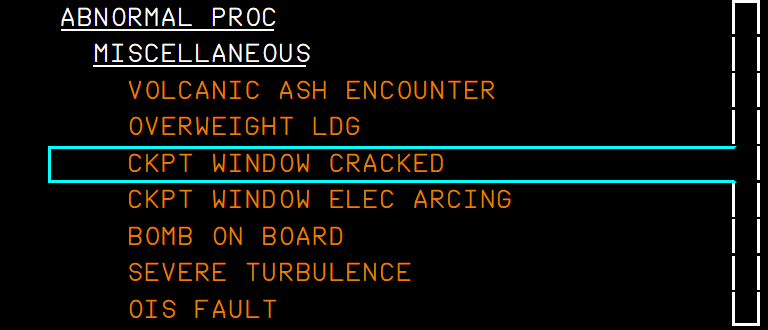
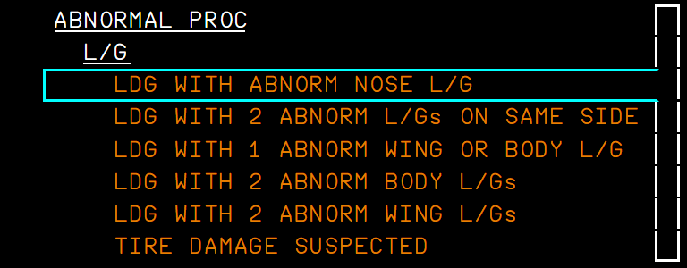
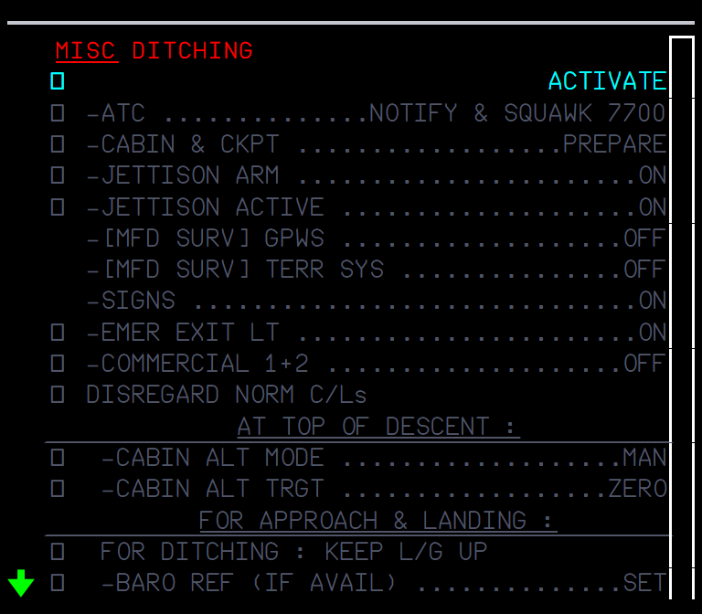
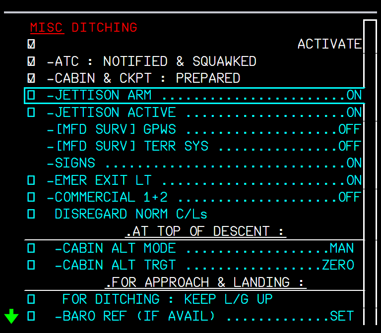
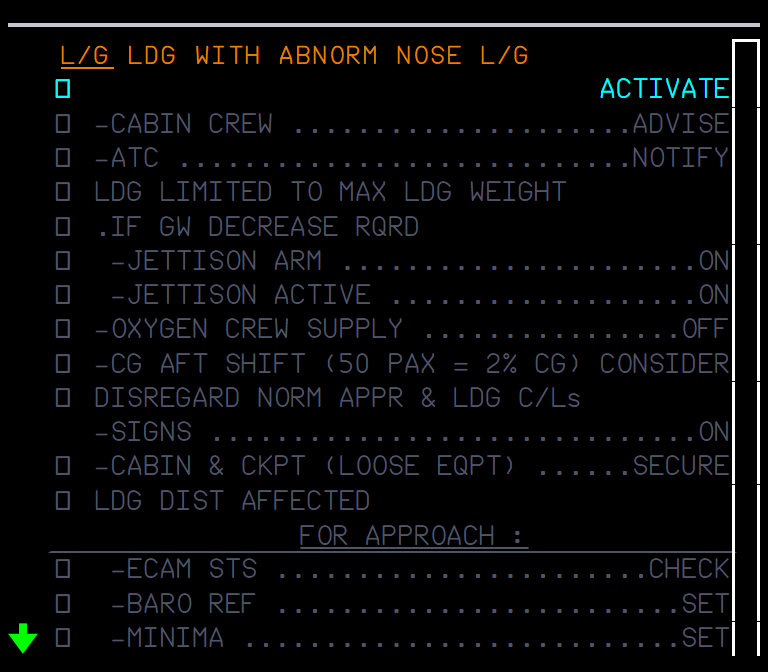
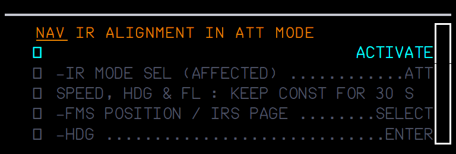
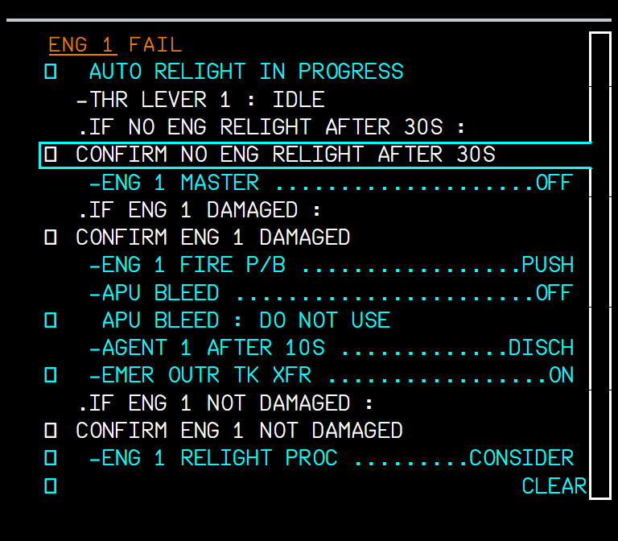
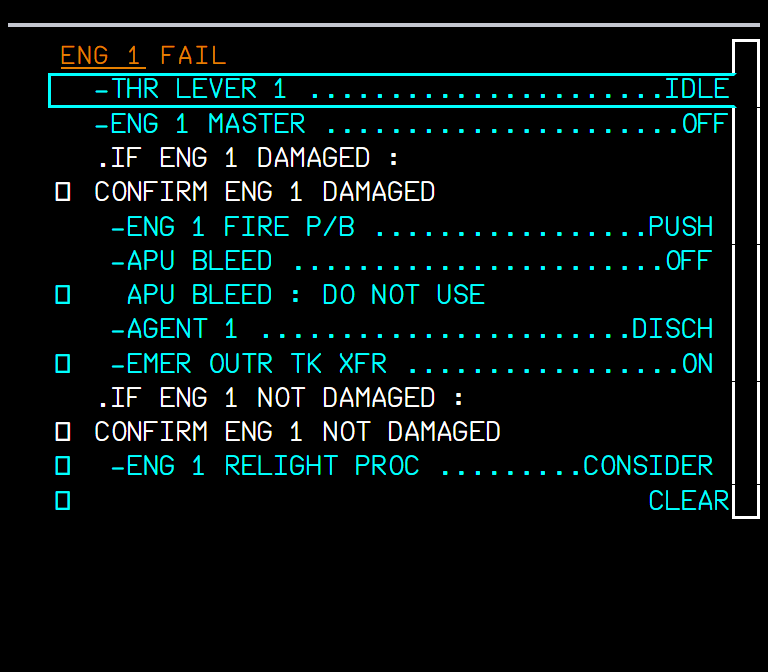
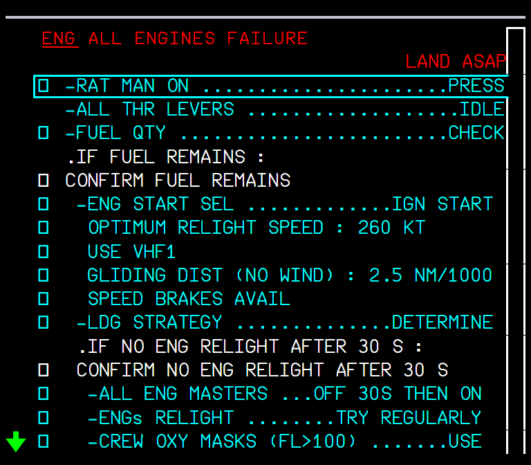
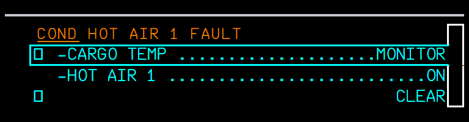

The ABN PROC procedures that showed nothing, and the lines of the ENG FAIL, ALL ENGINES FAILURE and COND alerts, written from the A380 FCOM
AircraftA380XWhere to find itECP ABN PROC (not-sensed procedures, EWD); the sensed alerts appear by themselves on the EWDPR branchpr/17-ecam-procedures (independent)StatusTested in the sim (September 2026).PicturesEWD in the local browser harness, running the build installed in the sim; the EWD states are the ones the FWS sends.
1. What it is for
2. Opening a not-sensed procedure
3. The procedures added
4. Sensed alerts with FCOM lines
5. Reading the lines
6. Limitations and why
1. What it is for
Many ABN PROC procedures were marked WIP: they had no lines and no FWS entry, so selecting one showed nothing. They now carry the FCOM text (PRO-ABN-ECAM-10 and -20). Some sensed alerts also got their FCOM lines, with the lines the FWS can check ticking by themselves.
2. Opening a not-sensed procedure
Press ABN PROC on the ECP. The EWD lists the red emergency procedures, then the categories (ENG, F/CTL, L/G, NAV, FUEL, MISCELLANEOUS).
Move the cursor with the ECP UP / DOWN keys and press CHECK: the category opens, then the procedure.
The procedure shows in grey with ACTIVATE: a preview. CHECK on ACTIVATE runs it: the lines turn cyan and the cursor walks through them.

Figure 1. ABN PROC > MISCELLANEOUS.

Figure 2. ABN PROC > L/G: the landing gear procedures.

Figure 3. DITCHING before ACTIVATE (grey preview).

Figure 4. DITCHING activated: ATC and CABIN & CKPT checked by the crew; the cursor on JETTISON ARM.
FUEL LEAK (the FUEL LEAK DETECTED procedure, with LAND ANSA), MAN BALANCING PROCEDURE
L/G
LDG WITH ABNORM NOSE L/G, WITH 2 ABNORM L/Gs ON SAME SIDE, WITH 1 ABNORM WING OR BODY L/G, WITH 2 ABNORM BODY L/Gs, WITH 2 ABNORM WING L/Gs (they call the WHEEL page)
NAV
IR ALIGNMENT IN ATT MODE
ENG
HI VIBRATIONS (was missing from the list)

Figure 5. LDG WITH ABNORM NOSE L/G (preview).

Figure 6. IR ALIGNMENT IN ATT MODE (preview).
4. Sensed alerts with FCOM lines
These appear by themselves when the failure is detected.

Figure 7. ENG 1 FAIL in flight: AUTO RELIGHT IN PROGRESS, THR LEVER 1 IDLE (ticked, the lever is at idle), then the relight / damaged branches.

Figure 8. ENG 1 FAIL on the ground: the ground lines only.
Situation
What you should see
ENG x FAIL just after lift-off
The first line is L/G ... UP, until the gear lever is up.
ENG x FAIL in flight
AUTO RELIGHT IN PROGRESS; THR LEVER x IDLE, ENG x MASTER OFF, FIRE P/B, APU BLEED, AGENT: these tick from the cockpit controls.
ENG x FAIL on the ground
Only the ground part of the procedure.
All four engines fail in flight
ALL ENGINES FAILURE (red, LAND ASAP): the FCOM ALL ENG FLAME OUT procedure, fuel remaining / no fuel, relight, then forced landing or ditching; it scrolls with the cursor.
HOT AIR 1 (2) pushbutton OFF
COND HOT AIR 1 (2) FAULT: CARGO TEMP MONITOR, HOT AIR 1 ON.
COND TEMP CTL FAULT
Now with its FCOM lines.

Figure 9. ALL ENGINES FAILURE, first page.

Figure 10. COND HOT AIR 1 FAULT.
5. Reading the lines
Upper case .IF ... lines are ECAM conditions: the crew confirms them (CONFIRM ...), then the lines below become active.
Headers such as AT TOP OF DESCENT : are centred sub-headings.
Sensed lines tick by themselves once the action is done; the others are ticked by the crew with the ECP CHECK key.
A line fits the 41 characters of the EWD; nesting is capped at three levels.
6. Limitations and why
Limitation
Why
What to do
About 85 sensed alerts show their title only.
The FCOM gives no lines for them ("Crew awareness").
-
No deferred procedures, limitations or STATUS for the new procedures.
Not in this change.
-
FLUCTUATING VERTICAL SPEED stays WIP; HOT AIR 1(2) OFF / VLV OPEN, T.O V1/VR/V2 DISAGREE, OVERSPEED LOAD ANALYSIS REQUIRED have no lines.
They are not in the 2011 FCOM used as the source.
-
ALL ENGINES FAILURE is long.
It is the full FCOM procedure; the EWD scrolls with the cursor.